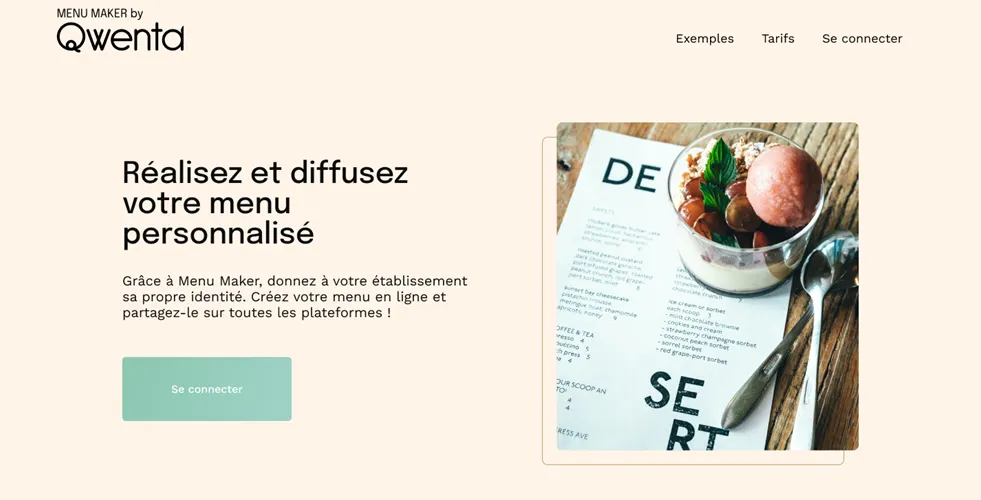

Planification complète et organisation technique avant le développement.
Le projet Menu Maker visait à concevoir l’ensemble de la structure
d’un site web pour restaurateurs avant toute écriture de code.
L’objectif était de fournir au Product Owner et à l’équipe technique une base claire
et exploitable pour le développement futur.
Mon rôle comprenait :
• L’analyse des maquettes et spécifications fonctionnelles,
• La rédaction d’un document complet de spécifications techniques,
• La création d’un Kanban structuré avec estimation des tâches, attribution des rôles et critères
d’acceptation,
• L’organisation d’une veille technologique ciblée pour guider les choix techniques,
• La préparation d’une présentation synthétique et professionnelle résumant la solution retenue,
La première étape a consisté à explorer les documents disponibles : maquettes Figma, spécifications fonctionnelles, user stories sur Notion, modèle de spécifications techniques et template de présentation. La visualisation en mode prototype a permis de comprendre les enchaînements d’écrans et de vérifier la compréhension globale du projet.
Une veille technologique a été réalisée pour identifier les solutions techniques, librairies et plugins adaptés au projet. Ces informations ont été intégrées dans le document de spécifications techniques pour chaque fonctionnalité, afin de justifier les choix et préparer les développements futurs.
Un Kanban structuré a été créé avec une estimation des tâches selon leur complexité et priorité (P1, P2, P3). Chaque ticket inclut une description précise et les spécifications techniques correspondantes, permettant une vision claire des étapes de développement.
Le projet a anticipé les besoins backend et API, ainsi que les processus de relecture de code et les tests nécessaires. L’utilisation d’outils comme Notion, Jira ou Trello a facilité la gestion des tâches et la coordination de l’équipe.
Enfin, les livrables ont été consolidés pour créer un support de présentation final destiné à Soufiane. Les slides ont été conçues pour être synthétiques, claires et représentatives de la solution technique proposée.
J’ai travaillé sur :
• Transformer les besoins utilisateurs en spécifications techniques détaillées,
• Organiser un projet avec un Kanban clair (rôles, story points, critères d’acceptation),
• Réaliser une veille technologique structurée et exploitable,
• Comprendre les interactions front-end, back-end et base de données,
• Structurer les fonctionnalités en tâches précises et testables,
• Préparer une présentation professionnelle du projet,